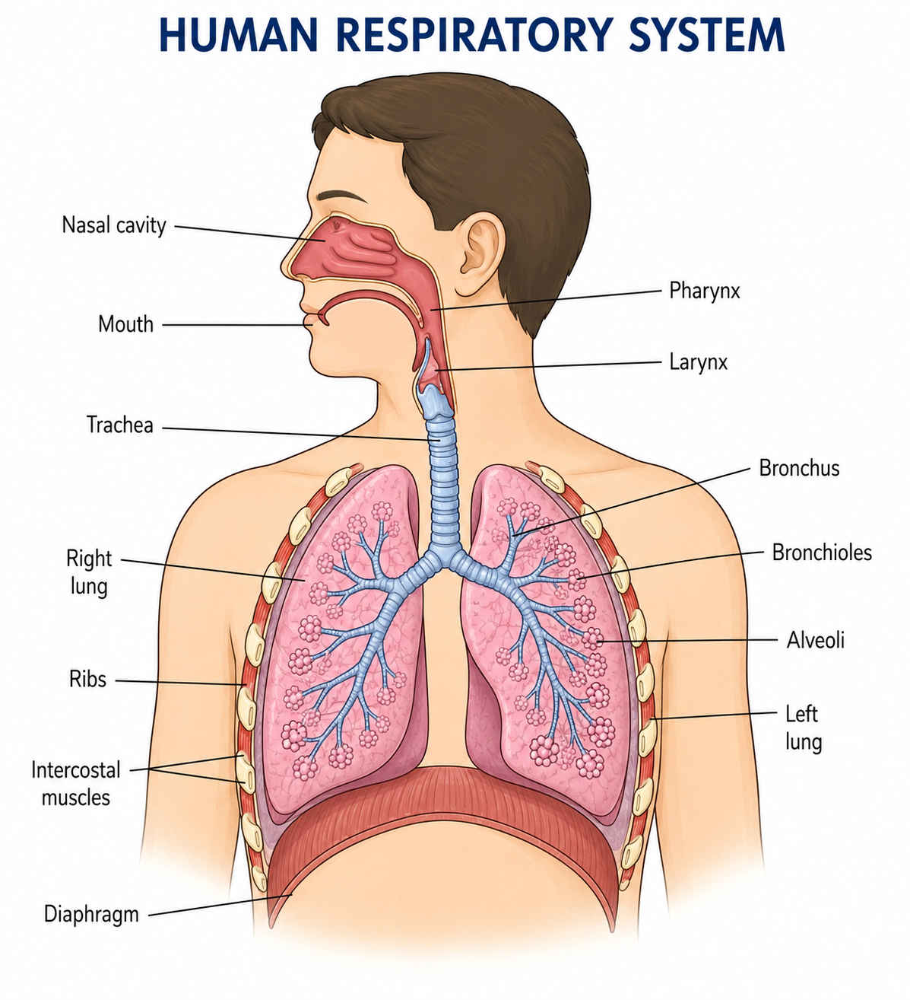

1. What is Respiration?
Respiration is the chemical process in living cells that releases energy from food substances, especially glucose.
The energy released during respiration is used for activities such as growth, movement, active transport, reproduction, repair and maintaining body temperature.
Respiration takes place continuously in living cells, both during the day and at night.
2. Respiration and Breathing Are Not the Same
Breathing is the physical movement of air into and out of the lungs.
Respiration is a chemical process that occurs inside cells and releases energy from food.
Therefore, breathing supplies oxygen needed for aerobic respiration and removes carbon dioxide produced during respiration.
3. Why is Energy from Respiration Important?
Energy released during respiration is needed for:
- Muscle contraction and movement
- Active transport
- Growth and development
- Cell division
- Repair of damaged tissues
- Maintaining body temperature
- Making new substances inside cells
- Reproduction
4. Aerobic Respiration
Aerobic respiration is respiration that uses oxygen to release a large amount of energy from glucose.
It occurs in the cells of plants, animals and many other organisms.
Word equation:
Glucose + Oxygen → Carbon dioxide + Water + Energy
5. Balanced Equation for Aerobic Respiration
The balanced chemical equation is:
C₆H₁₂O₆ + 6O₂ → 6CO₂ + 6H₂O + energy
The glucose molecule is broken down and oxygen is used during the process.
6. Anaerobic Respiration
Anaerobic respiration is respiration that releases energy from glucose without using oxygen.
It releases much less energy than aerobic respiration.
Anaerobic respiration occurs in some microorganisms and can occur temporarily in human muscle cells during vigorous exercise when oxygen supply cannot meet demand.
7. Anaerobic Respiration in Human Muscles
During vigorous exercise, muscles require energy very quickly.
If the oxygen supply is insufficient, glucose can be broken down anaerobically.
Word equation:
Glucose → Lactic acid + Energy
Anaerobic respiration allows muscles to continue working for a short time, but it leads to the accumulation of lactic acid.
8. Fermentation in Yeast
Yeast can respire anaerobically by fermentation.
Word equation:
Glucose → Ethanol + Carbon dioxide + Energy
Fermentation is useful in industries such as bread-making and the production of some fermented foods and drinks.
9. Aerobic and Anaerobic Respiration Compared
| Feature | Aerobic | Anaerobic |
|---|---|---|
| Oxygen | Requires oxygen | Does not require oxygen |
| Energy released | Large amount | Small amount |
| In humans | Occurs normally in cells | Can occur during vigorous exercise |
| Products in humans | Carbon dioxide and water | Lactic acid |
| Products in yeast | Carbon dioxide and water | Ethanol and carbon dioxide |
10. Respiration in Plants
Plants also respire continuously, both during the day and at night.
During aerobic respiration, plant cells use oxygen and release carbon dioxide and water.
Plants obtain gases by diffusion through structures such as stomata and through other surfaces.
Photosynthesis and respiration are different processes. Photosynthesis stores energy in glucose, while respiration releases energy from glucose.
11. The Human Respiratory System
The human respiratory system is responsible for taking oxygen into the body and removing carbon dioxide.
The major structures include:
- Nasal cavity
- Mouth
- Pharynx
- Larynx
- Trachea
- Bronchi
- Bronchioles
- Lungs
- Alveoli
- Diaphragm
- Intercostal muscles
- Ribs
12. Human Respiratory System Diagram

Study the position and function of each labelled structure. Diagram-label questions are common in Biology examinations.
13. The Nose and Nasal Cavity
Air normally enters the respiratory system through the nose.
The nasal cavity:
- Filters dust and microorganisms
- Warms incoming air
- Adds moisture to the air
- Helps protect the respiratory system
Hairs and mucus trap many particles present in inhaled air.
14. Pharynx and Larynx
The pharynx is a passage through which air travels from the nose or mouth towards the larynx.
The larynx, commonly called the voice box, connects the pharynx to the trachea.
The larynx also contains structures involved in producing sound.
15. Trachea
The trachea is the main airway leading from the larynx towards the bronchi.
It contains rings of cartilage that help prevent the airway from collapsing.
Its lining contains mucus-producing cells and cilia.
16. Cilia and Mucus
Mucus traps dust particles and microorganisms.
Cilia are tiny hair-like structures that move mucus towards the throat, where it can be removed from the respiratory system.
This helps protect the lungs from harmful particles.
17. Bronchi
The trachea divides into two main tubes called the bronchi.
One bronchus enters each lung.
The bronchi divide repeatedly into smaller airways.
18. Bronchioles
Bronchioles are smaller branches of the bronchi.
They distribute air throughout the lungs and eventually lead to groups of alveoli.
19. Lungs
The lungs contain millions of tiny air sacs called alveoli.
The lungs are protected by the rib cage and are involved in gaseous exchange.
The right and left lungs are supplied with their own bronchial branches and blood vessels.
20. Alveoli
Alveoli are tiny air sacs where gaseous exchange takes place between the air and the blood.
Oxygen diffuses from the alveoli into the blood, while carbon dioxide diffuses from the blood into the alveoli.
21. Adaptations of Alveoli
Alveoli are well adapted for efficient gaseous exchange.
- Large surface area: Millions of alveoli provide a large exchange surface.
- Thin walls: Their walls are only about one cell thick, giving a short diffusion distance.
- Good blood supply: A dense network of capillaries maintains concentration gradients.
- Moist surface: Gases can dissolve before diffusing across the surface.
- Ventilation: Continuous breathing replaces the air in the alveoli.
22. Characteristics of a Good Respiratory Surface
An efficient respiratory surface should have:
- A large surface area
- A thin surface
- A moist surface
- A good blood supply
- A mechanism for maintaining a concentration gradient
These features increase the rate of diffusion of gases.
23. Gaseous Exchange by Diffusion
Diffusion is the net movement of particles from a region of higher concentration to a region of lower concentration.
In the lungs:
- Oxygen diffuses from the alveoli into the blood.
- Carbon dioxide diffuses from the blood into the alveoli.
24. Pathway of Oxygen into the Body
A simplified route for inhaled oxygen is:
Nose/Mouth → Pharynx → Larynx → Trachea → Bronchi → Bronchioles → Alveoli → Blood
From the blood, oxygen is transported to body tissues, where it is used by cells during aerobic respiration.
25. Pathway of Carbon Dioxide Out of the Body
Carbon dioxide produced by cells is transported in the blood to the lungs.
It then diffuses into the alveoli and is breathed out.
The pathway is approximately:
Body cells → Blood → Lung capillaries → Alveoli → Bronchioles → Bronchi → Trachea → Larynx → Nose/Mouth
26. Ventilation
Ventilation is the movement of air into and out of the lungs.
It consists of:
- Inspiration — breathing in
- Expiration — breathing out
Ventilation keeps replacing the air in the alveoli and helps maintain concentration gradients for diffusion.
27. Inspiration
During inspiration:
- The diaphragm contracts and flattens.
- The external intercostal muscles contract.
- The ribs move upwards and outwards.
- The volume of the thoracic cavity increases.
- The pressure inside the lungs decreases.
- Air moves into the lungs.
28. Expiration
During normal expiration:
- The diaphragm relaxes and becomes dome-shaped.
- The intercostal muscles relax.
- The ribs move downwards and inwards.
- The volume of the thoracic cavity decreases.
- The pressure inside the lungs increases.
- Air moves out of the lungs.
29. Role of the Diaphragm
The diaphragm is a sheet of muscle below the lungs.
It changes the volume of the chest cavity during breathing.
| Inspiration | Expiration |
|---|---|
| Diaphragm contracts | Diaphragm relaxes |
| Moves down and flattens | Moves up and becomes dome-shaped |
| Chest volume increases | Chest volume decreases |
| Air enters | Air leaves |
30. Role of Ribs and Intercostal Muscles
The ribs protect the lungs and move during breathing.
Intercostal muscles are found between the ribs.
Their contraction and relaxation help change the volume of the thoracic cavity.
31. Breathing Rate and Depth
Breathing rate is the number of breaths taken per minute.
Depth of breathing refers to the amount of air moved in and out during each breath.
Both can increase when the body's demand for oxygen rises.
32. Effect of Exercise on Breathing
During exercise, muscles respire more rapidly and require more energy.
Therefore:
- Breathing rate increases.
- Breathing becomes deeper.
- Heart rate increases.
- More oxygen is delivered to muscles.
- More carbon dioxide is removed.
33. Inspired and Expired Air
The composition of air changes as it passes through the respiratory system.
| Inspired Air | Expired Air |
|---|---|
| More oxygen | Less oxygen |
| Less carbon dioxide | More carbon dioxide |
| Less water vapour | More water vapour |
| Usually cooler | Usually warmer |
34. Why Does Expired Air Contain More Carbon Dioxide?
Carbon dioxide is produced during aerobic respiration in cells.
It is transported by the blood to the lungs and then diffuses into the alveoli.
It is removed from the body during expiration.
35. Testing for Carbon Dioxide
Carbon dioxide can be tested using limewater.
When carbon dioxide is passed through limewater, the limewater turns milky/cloudy.
This provides evidence that carbon dioxide is present in the gas being tested.
36. Experiment: Respiration Produces Carbon Dioxide
Respiring biological material can be used to demonstrate carbon dioxide production.
Basic procedure:
- Place actively respiring material in a suitable container.
- Direct the gas produced towards limewater.
- Observe the limewater.
Observation: The limewater turns milky.
Conclusion: Carbon dioxide is produced during respiration.
37. Experiment: Respiration Releases Heat
Energy released during respiration can be demonstrated by measuring temperature changes in actively respiring material.
Germinating seeds are commonly used because they are actively respiring.
Basic experiment:
- Place germinating seeds in an insulated container.
- Insert a thermometer without allowing it to directly affect the seeds.
- Record the initial temperature.
- Leave the setup for an appropriate period.
- Record the final temperature.
If the temperature rises, this provides evidence that energy released during respiration has been transferred partly as heat.
38. Importance of a Control in the Heat Experiment
A control setup is needed to show that the temperature change is caused by respiration rather than another factor.
A suitable control could contain non-germinating or inactive material under otherwise similar conditions.
Both setups should be treated in the same way and their temperatures compared.
39. Lactic Acid and Vigorous Exercise
During vigorous exercise, muscles may not receive enough oxygen to meet their energy demands.
Anaerobic respiration can then occur, producing lactic acid.
Lactic acid accumulation is associated with muscle fatigue.
40. Oxygen Debt
After vigorous exercise, breathing and heart rate can remain high for some time.
This helps supply additional oxygen needed by the body after exercise.
The additional oxygen helps deal with products of anaerobic respiration and supports the body's return towards normal conditions.
41. Respiratory Diseases
Diseases and conditions affecting the respiratory system can interfere with breathing or gaseous exchange.
Examples include:
- Asthma
- Bronchitis
- Pneumonia
- Tuberculosis (TB)
- Emphysema
42. Effects of Smoking on the Respiratory System
Tobacco smoke contains harmful substances that can damage the respiratory system.
Important harmful substances include:
- Tar: Can damage lung tissue and contains carcinogenic substances.
- Carbon monoxide: Reduces the blood's ability to transport oxygen efficiently.
- Nicotine: Is addictive and affects the cardiovascular system.
Smoking can damage cilia, increase the risk of respiratory disease and reduce lung efficiency.
43. Respiration vs Photosynthesis
| Respiration | Photosynthesis |
|---|---|
| Releases energy from glucose | Stores energy in glucose |
| Occurs in living cells | Occurs in chlorophyll-containing cells |
| Occurs day and night | Requires suitable light conditions |
| Uses glucose in aerobic respiration | Produces glucose |
| Produces carbon dioxide in aerobic respiration | Uses carbon dioxide |
44. Important Respiration Definitions
- Respiration: Chemical process in cells that releases energy from food.
- Breathing: Movement of air into and out of the lungs.
- Aerobic respiration: Respiration using oxygen.
- Anaerobic respiration: Respiration without oxygen.
- Fermentation: Anaerobic breakdown of glucose in microorganisms such as yeast, producing ethanol and carbon dioxide.
- Alveolus: A tiny air sac in the lungs where gaseous exchange occurs.
- Diffusion: Net movement of particles from higher concentration to lower concentration.
- Ventilation: Movement of air into and out of the lungs.
45. Key Equations to Memorise
Aerobic respiration:
Glucose + Oxygen → Carbon dioxide + Water + Energy
Human anaerobic respiration:
Glucose → Lactic acid + Energy
Yeast fermentation:
Glucose → Ethanol + Carbon dioxide + Energy
46. O/L GCE Exam Focus
Be prepared to answer questions involving:
- Definition of respiration
- Difference between respiration and breathing
- Aerobic and anaerobic respiration
- Word equations for respiration
- Fermentation in yeast
- Structure of the human respiratory system
- Labelling respiratory-system diagrams
- Functions of the trachea, bronchi, bronchioles and alveoli
- Adaptations of alveoli for gaseous exchange
- Diffusion of oxygen and carbon dioxide
- Mechanism of inspiration and expiration
- Roles of the diaphragm, ribs and intercostal muscles
- Changes in breathing during exercise
- Differences between inspired and expired air
- Testing for carbon dioxide using limewater
- Experiments demonstrating heat release during respiration
- Lactic acid and anaerobic respiration during exercise
- Effects of smoking and respiratory diseases
47. Common O/L Mistakes
- ❌ Saying respiration means breathing.
- ❌ Saying plants do not respire.
- ❌ Saying aerobic respiration occurs only in animals.
- ❌ Saying anaerobic respiration produces more energy than aerobic respiration.
- ❌ Confusing bronchi with bronchioles.
- ❌ Saying oxygen moves from the blood into the alveoli during normal gaseous exchange.
- ❌ Forgetting that alveoli have thin walls and a good blood supply.
- ❌ Reversing the movements of the diaphragm during inspiration and expiration.
- ❌ Forgetting that carbon dioxide is produced during aerobic respiration.
- ❌ Confusing fermentation in yeast with anaerobic respiration in human muscles.
48. Quick Revision
Remember the core ideas:
- 💨 Respiration releases energy from food in cells.
- 🫁 Breathing moves air into and out of the lungs.
- 🧪 Aerobic respiration uses oxygen.
- ⚡ Aerobic respiration releases a relatively large amount of energy.
- 🔋 Anaerobic respiration releases less energy.
- 🦠 Yeast produces ethanol and carbon dioxide during fermentation.
- 💪 Human muscles can produce lactic acid during anaerobic respiration.
- 🫁 Alveoli are the main gaseous-exchange surfaces.
- 🔄 Oxygen enters the blood while carbon dioxide leaves it at the alveoli.
- 🫀 Exercise increases breathing and heart rate.
49. Final O/L Exam Checklist
Before leaving this topic, make sure you can:
- ☐ Define respiration.
- ☐ Explain the difference between breathing and respiration.
- ☐ State the word equation for aerobic respiration.
- ☐ State the word equation for anaerobic respiration in humans.
- ☐ State the word equation for fermentation in yeast.
- ☐ Compare aerobic and anaerobic respiration.
- ☐ Label the human respiratory system.
- ☐ State the functions of the main respiratory structures.
- ☐ Explain why alveoli are efficient exchange surfaces.
- ☐ Explain gaseous exchange by diffusion.
- ☐ Describe inspiration.
- ☐ Describe expiration.
- ☐ Explain the roles of the diaphragm and intercostal muscles.
- ☐ Explain why breathing rate increases during exercise.
- ☐ Compare inspired and expired air.
- ☐ Explain how limewater tests for carbon dioxide.
- ☐ Describe an experiment showing that respiration releases heat.
- ☐ Explain anaerobic respiration and lactic acid during exercise.
- ☐ State important respiratory diseases and effects of smoking.